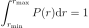
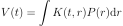

Basics#
DeerLab applications to dipolar EPR spectroscopy relies on a few central quantities. They include distance distributions and model functions, background and their model functions, time-domain signals, and kernels. They are described in this section.
All functions in DeerLab use the same units: all distances are in units of nanometers, and all times in units of microseconds.
Distance distributions#
A distance distribution  between two spins is represented by a pair of vectors: a distance vector
between two spins is represented by a pair of vectors: a distance vector r (in nanometers) and a vector of densities P (in inverse nanometers). The distance vector r can have linearly or non-linearly increasing values, but must have positive non-zero values. The elements P[i] are the distance distribution values at r[i] and are positive or zero. Outside of the range defined by r, the distribution P is assumed to be zero, i.e. the distribution is truncated to the range r. The distance distribution P is normalized such that the integral over the range of the provided r equals one:

DeerLab distinguishes between non-parametric and parametric distance distributions.
- Non-parametric distance distributions
These provide the more general definition of distance distributions. They have no particular shape and are represented by the vectors
Pandr. For example, you can generatePandrby an external program for spin label rotamer modeling or from molecular dynamics simulations.- Parametric distance distributions
These have specific shapes that are determined by a few parameters. DeerLab provides many parametric distance distribution built-in models. All these model’s names start with the prefix
dd_(ddstands for “distance distribution”). They take a distance vectorrand a parameter vectorparamas inputs and return the distance distribution as a vectorP. Here is an example:r = np.linspace(1.5,6,200) # distance vector, in nm rmean = 3 # nm, mean of Gaussian sigma = 0.2 # nm, standard deviation of Gaussian P = dl.dd_gauss(r, rmean, sigma) # Gaussian distribution plt.plot(r,P)
To programmatically get information on a particular distance distribution model and its parameters, print the model, which will return information on the model itself, its call signature, and a parameter table containing all the model parameters, its boundaries, start values and other useful information
>>>print(dl.dd_gauss) Description: Gaussian distribution model Signature: (r, mean, std) Constants: [r] Parameter Table: ====== ======= ======= ======= ======== ======== ====== ==================== Name Lower Start Upper Type Frozen Unit Description ====== ======= ======= ======= ======== ======== ====== ==================== mean 1 3.5 20 nonlin No nm Mean std 0.05 0.2 2.5 nonlin No nm Standard deviation ====== ======= ======= ======= ======== ======== ====== ====================
In least-squares fitting, non-parametric distance distributions make fewer assumptions about the distribution than parametric distance distributions. They are more flexible and introduce less bias.
Dipolar background#
In DeerLab, all inter-molecular contributions to the dipolar modulation (i.e. the echo modulation function due to randomly distributed spins in the sample that are not part of the spin-labeled protein or object) are referred to as the dipolar background. DeerLab has a range of parametric models for the background. All these background model’s names start with the prefix bg_. They take the time axis vector t (in microseconds) and a parameter vector param as inputs. The output is a background vector B defined over t. To get information on the model and its parameters, print the model
>>>print(dl.bg_hom3d)
Description: Background from homogeneous distribution of spins in a 3D medium
Signature: (t, conc, lam)
Constants: [t]
Parameter Table:
====== ======= ======= ======= ======== ======== ====== ====================
Name Lower Start Upper Type Frozen Unit Description
====== ======= ======= ======= ======== ======== ====== ====================
conc 0.01 50 5e+03 nonlin No μM Spin concentration
lam 0 1 1 nonlin No Pathway amplitude
====== ======= ======= ======= ======== ======== ====== ====================
DeerLab’s background models fall into two categories, physical and phenomenological:
- Physical background models
Describe particular distributions of spin labels in space and depend on physical parameters such as spin concentration, exclusion distances, and fractal dimensionality. The most common background model is deerlab.bg_hom3d, which describes the signal due to a homogeneous three-dimensional distribution of spins of a given concentration. A background due to a homogeneous distribution of spins in fractal dimensions is available with deerlab.bg_homfractal, and excluded-volume effects can be accounted for using deerlab.bg_hom3dex to model the background.
t = np.linspace(-0.1,4,200) # time, in microseconds lam = 0.4 # modulation depth conc = 70 # spin concentration, in µM B = dl.bg_hom3d(t,conc,lam) # homogeneous 3D background plt.plot(t,B)
- Phenomenological background models
Represent various mathematical functions that are intended to mimic the background decay, without reference to a particular spatial distribution of spins. The parameters of these models do no have a direct physical meaning. Some examples include deerlab.bg_exp, which models the background decay as a simple exponential function, or deerlab.bg_strexp which model the background decay as a stretched exponential function.
t = np.linspace(-0.1,4,200) # time, in microseconds kappa = 0.35 # decay rate, in inverse microseconds B = dl.bg_exp(t,kappa) # exponential background plt.plot(t,B)
In general, it is preferable to use physical instead of phenomenological models.
Experiments#
DeerLab supports a wide range of dipolar EPR experiments (4-pulse DEER, 4-pulse DEER, RIDME, etc). Experiments differ in the number and nature of their modulated dipolar pathways. Each of these pathways leads to a dipolar modulation contribution to the total dipolar signal, with specific amplitude and refocusing times. The overall dipolar signal is the sum of an unmodulated contribution and a contribution from all modulated pathways, each of which with its own amplitude, refocusing time, and harmonic. For each supported experiment, there is a dedicated experiment :ref:` constructor <modelsref_ex>` starting with ex_, which generate experimental information on the pathway refocusing times and amplitudes based on the type of experiment and the experimental pulse sequence delays. This information can later be used to refine and constrain the dipolar models.
Dipolar kernels#
One of the core functions of DeerLab’s dipolar EPR applications is dipolarkernel. It constructs the kernel that provides the connection between the distance distribution and the time-domain dipolar signal via

The simplest dipolar kernel just requires the time-vector t and distance-vector r
t = np.linspace(0,6,300) # time axis, in µs
r = np.linspace(2,7,300) # distance axis, in nm
K0 = dl.dipolarkernel(t,r) # dipolar kernel matrix
K0 is the kernel matrix. It assumes no orientation selection and absence of exchange couplings. To calculate the dipolar signal corresponding to a distance distribution P according to the equation above, use
V = K0@P # calculate signal from distribution
The above K0 is the most elementary kernel, giving a single dipolar evolution function centered at time zero, with modulation depth 1, and without any background decay. The kernel can also account for the background and the dipolar pathways. Then, operation V=K@P will return the complete time-domain dipolar signal. Here is an example for a 4-pulse DEER signal
lam = 0.4 # modulation depth
B = dl.bg_hom3d(t,200,lam) # background (inter-molecular modulation function)
K = dl.dipolarkernel(t,r,mod=lam,bg=B) # kernel matrix, including lam and B
V = K@P # calculate signal from distribution
plt.plot(t,V) # plotting
For experiments with more than one modulated dipolar pathway (such as 5-pulse DEER), modulation amplitudes and refocusing times for each pathway must be provided to dipolarkernel. Additionally, the background must be provided as a callable function that takes only time and modulation amplitude and encapsulates all other parameters. For example, for a 5-pulse DEER signal
Lam0 = 0.5 # amplitude of the unmodulated component
lam1 = 0.4 # amplitude of the primary modulated pathway
lam2 = 0.1 # amplitude of the secondary modulated pathway
tref1 = 0.0 # refocusing time of the primary pathway, in µs
tref2 = 3.1 # refocusing time of the secondary pathway, in µs
# Dipolar pathways of the 5-pulse DEER experiment
pathways = [[Lam0],
[lam1,tref1],
[lam2,tref2]]
Bfcn = lambda t,lam: dl.bg_hom3d(t,200,lam) # Function for background
K = dl.dipolarkernel(t,r,pathways=pathways,bg=Bfcn) # 5-pulse DEER dipolar kernel
The function dipolarkernel also has options to set the excitation bandwidth, to select the internal calculation method, and more.
Dipolar signals#
Dipolar signals are the results of the many different dipolar EPR spectroscopy experiments. They represent the data from which distance distributions can be infered. DeerLab provides the tools for simulating dipolar signals originating from different experiments.
To generate complete time-domain signals from a distance distribution and a background decay, use the function dipolarkernel (described above) and apply it to the distance distribution:
K = dl.dipolarkernel(t,r,mod=lam,bg=B) # generate dipolar kernel
V = K@P # generate dipolar signal
plt.plot(t,V)
It is possible to add noise to simulated data by using the whitegaussnoise function:
sigma = 0.05 # noise level
V = K@P + dl.whitegaussnoise(t,sigma) # add some noise
With this, uncorrelated Gaussian noise with standard deviation sigma is added to the noise-free signal.
Adding a phase rotation is also possible, yielding a complex-valued signal with non-zero imaginary component. The phase shift on the noise has to be taken into account too:
phase = np.pi/4 # phase shift, radians
V = K@P*exp(-1j*phase) # add a phase shift
rnoise = dl.whitegaussnoise(t,sigma) # noise of real component noise
inoise = dl.whitegaussnoise(t,sigma) # noise of imaginary component
V = V + rnoise + inoise # complex-valued noisy signal